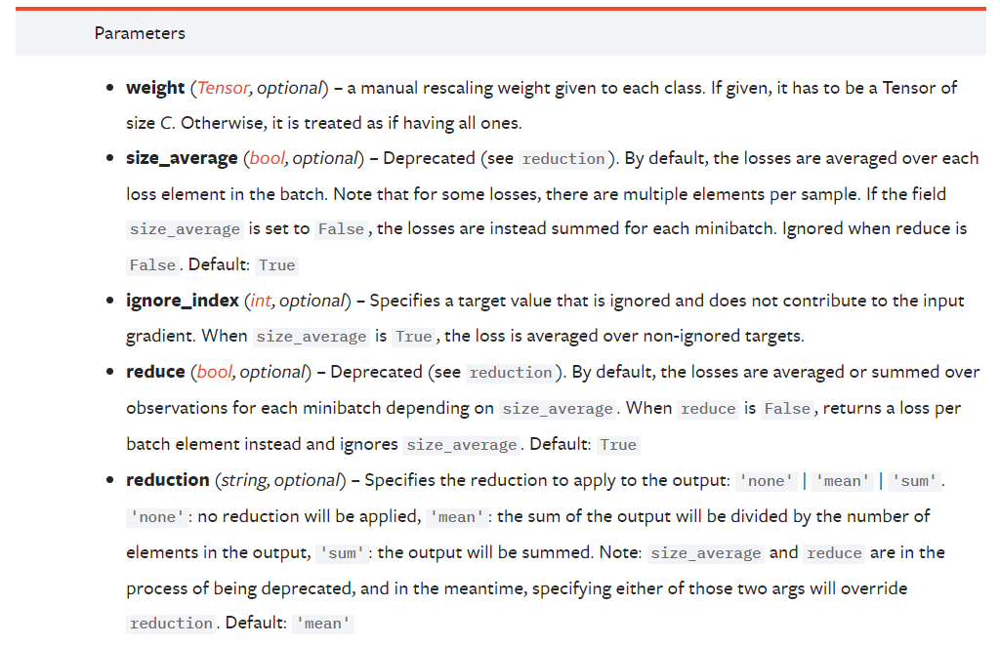

PytorchAPI
先来看看什么是交叉熵损失函数。考虑在一个含有C个类别的图像分类数据集上面训练神经网络，使用常规的batch SGD训练，
记一次迭代（iter）后神经网络的输出向量为x，则x的维度为\((batchsize,C\))，x[i]的维度为（C），代表第i张图片分别属于各类的置信度分；
真实的训练标签label向量可以表示为\([c_0,c_1,...,c_{batchsize-1}]\)，其中\(c_i\)为[0,C-1]范围的整数，代表第i张图片的真实类别。
我们希望神经网络的输出向量能够代表图片属于各类别的概率，但此时的x显然有正有负，所以需要先进行一步softmax操作，
使x[i]的各个分量都变成正的（其实就相当于做了一次指数归一化）：
\(x[i]\leftarrow\frac{exp(x[i])}{\sum\limits_jexp(x[i][j])}\)
经过softmax后，交叉熵损失可以表示为如下公式，其中第二个等号用到了python的特性：\(loss(x,label)=-\sum\limits_{i} {\log{x[i][label[i]]}}=-\log{x[label]}\)
上面的定义可能有点懵，下面我再详细解释一下。我们现在来看看\(\log{x[i][label[i]]}\)到底是个什么东西。 一层一层拆开来看，首先是\(label[i]\)，这个显然是第i张图片的真实标签。那么\(x[i][label[i]]\)又是什么？ x[i]是一个长度为C的向量，x[i][j]代表神经网络认为将第i张图片属于第j类的概率，再进一步， \(x[i][label[i]]\)就是神经网络将第i张图片分类正确的概率了。此时还是不明白\(\log{x[i][label[i]]}\)究竟是什么。\(\sum\limits_{i} {\log{x[i][label[i]]}}\)
至于为什么少了个负号，这是由于神经网络训练中规定寻找最小值。因此最后对似然函数取负号后就得到了交叉熵损失函数。